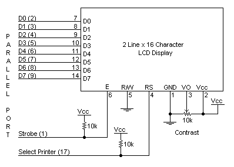
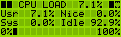
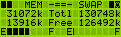
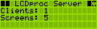

Being a System Administrator or a Linux enthusiast/user, we almost always keep an eye on important system information like disk usage, memory usage, cpu load, users logged in etc., now how about having all this information on a sleek LCD Display kept next to your monitor ?
LCD or a Liquid Crystal Display is almost seen everywhere ranging from digital watches to microwave ovens, from audio systems to PDA's and even some high-end servers. There are several cheap commercially available displays which can be controlled through the computer's parallel port or the serial port(RS-232). LCDs are manufactured by quite a few different companies. Units typically seen in the surplus market come from Hitachi, Epson, Hewlett Packard, Optrex, or Sharp. Common configurations are 16, 20, 24, 32, or 40 characters by 1, 2, or 4 lines.
I have personally tried out Hitachi HD44780 compatible 16X2 LCD display which are easily available from many display vendors and can be controlled through the parallel port. Please do note that some displays come with an option of backlight and others don't, the ones with a backlight option have some more pins to control the backlight and are bit more expensive, so the choice is yours!!
Before you embark on this exciting exercise beware that LCD Displays are really sensitive to improper wiring and operate only on specific voltages(typically 5V or 12V), if anything is messy they burn up!! also before you buy a display make sure that you also procure a pin configuration diagram and a technical data sheet along with it so that you have all the information handy when required.
Before you begin do make sure that you everything in the checklist given below:
A HD44780 compatible LCD Display (don't worry about the brand, just make sure from the vendor that it is Hitachi HD44780 compatible. by the way HD44780 is a display with an onboard controller which understands some standard instructions(protocol) to show characters on the screen from it's internally defined character set)
A Parallel Port (Centronics) connector with a cable attached(make sure you have a long cable with loose wires on the other end).
A soldering iron with some solder & flux (ask any electronic enthusiast friend of yours if you can't do this stuff yourself).
A power supply source (you'd typically require 5V or 12 V DC power supply, a AC to DC adapter available at your local electronic store will solve the purpose).
LCDproc (can be downloaded at http://lcdproc.omnipotent.net) or/and lcdmod (available at http://lcd-mod.sourceforge.net)
Before you attempt to wire up the display with your computer remember that you have to be pretty cautious with what you do here otherwise you can damage either the display or your computer, so if you are not aware of assembling simple electronic circuits, don't get disheartened. just ask some electronics geek friend of yours.
I am taking an example of a HD44780 Display which i have connected with the parallel port of my linux box as per the following wiring diagram:

This wiring scheme works fine for all HD44780 type displays and should hopefully work fine with your setup too.you can check whether your display is alive by adjusting the 'Contrast' resistor in the diagram above, it should show dark bands on the display when the resistor is at it's minimum value.
I have taken examples for both LCDproc and lcdmod, you can install either of these to test your display. If you are a newbie it's better you check out LCDproc first.
Firstly extract the archive you've downloaded:
[root@Linux gaurav]# tar -zxvf lcdproc-0.4.1.tar.gz
Next configure LCDproc with your parameters
[root@Linux gaurav]# cd lcdproc-0.4.1[root@Linux lcdproc-0.4.1]# ./configure --enable-drivers=curses,hd44780
This will configure and generate a Makefile so that you can test your installation with a curses based preview as well as use your HD44780 compatible display.
Let's now compile and finish our installation:
[root@Linux lcdproc-0.4.1]# make install
After you're done, we can test our installation with a check on the console itself by issuing the command
[root@Linux lcdproc-0.4.1]# LCDd -d curses -f
This shows a nifty little curses screen on your terminal with vital system information scrolling one by one. now for the real thing!! you can connect your LCD display with it's power supply on and start up the display by:
[root@Linux lcdproc-0.4.1]# LCDd -d hd44780
[root@Linux lcdproc-0.4.1]# lcdproc C M T X
This should bring up your LCD Display to life and show something like this:



By the time you've installed and configured LCDProc you must have realized that this software is actually based on a client-server model. The LCDProc server starts first with the client programs connecting to it and displaying the information. infact you can telnet to the LCDProc server (LCDd, the daemon process) and execute the commands manually.But, what if you want a faster mechanism to display and want to do away with all this socket thing. Well lcdmod's here to the rescue.
Lcdmod is a Character device driver for all HD44780 compatible displays written by Michael McLellan.It's much more faster then lcdproc and you can write stuff to the lcd as you are writing to any other device.
Let's get going through the installation, i've assumed that you have your lcd display properly wired up and tested with LCDProc.
Firstly let's uncompress the source archive:
[root@Linux gaurav]# tar -zxvf lcdmod-0.5.5.tgz[root@Linux gaurav]# cd lcdmod-0.5.5
Let's 'make' the source and install it:
[root@Linux lcdmod-0.5.5]# make[root@Linux lcdmod-0.5.5]# make install
This creates a LKM(Linux kernel Module) & a device named 'lcd' that will point to your LCD hardware.
Insert the LKM we've bulit by issuing:
[root@Linux lcdmod-0.5.5]# insmod lcd io=0x378 disp_rows=2 disp_cols=16
This inserts the module specifying the i/o based address of your parallel port (io), no. of rows(disp_rows) & no. of columns (disp_cols) of your display.
Now let's confirm whether the module has really gone in:
[root@Linux lcdmod-0.5.5]# lsmod
This should show an entry of the lcdmod module along with any other modules inserted (if any).
You can now display any text on your LCD by just issuing the a single command. eg.,
[root@Linux lcdmod-0.5.5]# echo Hello > /dev/lcd
This displays 'Hello' on your display. The aim of this article was to give you all the information to control an LCD display, so now it's up to your creativity and skills that how you implement this idea in your specific scenario. I've used a LCD Display for developing an employee logging system with a custom keypad, with the whole thing being web-enabled. ;-)
More information about configuring and wiring schemes can be had from LCDProc & lcdmod Project Pages.
 Gaurav Taneja
Gaurav TanejaIn my spare time I work on developing computer interfacing circuits and programs and developing software on Linux. I also run my own software consulting company named BroadStrike Technologies.